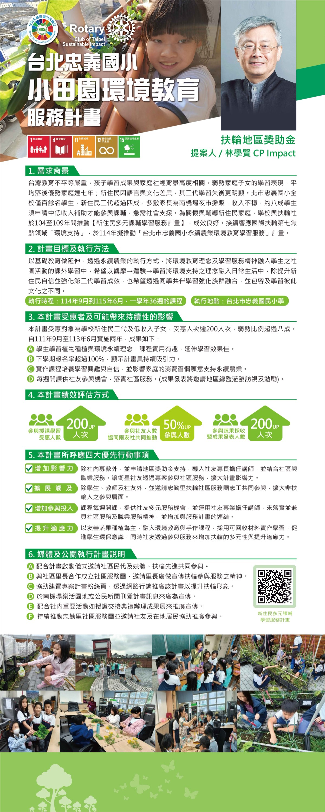

建立永力扶輪社，把「社友的職業服務被看見」變成這個社存在的核心目的。
看完整人物誌 →
台灣教育不平等嚴重，孩子學習成果與家庭社經背景高度相關。弱勢家庭子女的學習表現，平均落後優勢家庭達七年；新住民因語言與文化差異，其二代學習失衡更明顯。
北市忠義國小全校僅百餘名學生，新住民二代超過四成，多數家長為南機場夜市攤販，收入不穩，約八成學生須申請中低收入補助才能參與課輔，急需社會支援。
為關懷與輔導新住民家庭，學校與扶輪社於 104 至 109 年間推動【新住民多元課輔學習服務計畫】，成效良好。接續響應國際扶輪第七焦點領域「環境支持」，於 114 年擬推動「台北市忠義國小永續農業環境教育學習服務」計畫。
以基礎教育做延伸，透過永續農業的執行方式，將環境教育理念及學習服務精神融入學生之社團活動的課外學習中，希望以觀摩→體驗→學習將環境支持之理念融入日常生活中，除提升新住民自信並強化第二代學習成效，也希望透過同學共伴學習強化族群融合，並包容及學習彼此文化之不同。
本計畫受惠對象為學校新住民二代及低收入子女，受惠人次逾 200 人次，弱勢比例超過八成。自 111 年 9 月至 113 年 6 月實施兩年，成果如下：
| 評估項目 | 量化指標 |
|---|---|
| 參與授課學習受惠人數 | 200 UP 人次 |
| 參與社友人數 | 協同兩友社共同推動，50% UP 參與人數 |
| 參與蔬果採收暨成果發表人數 | 200 UP 人次 |
除社內募款外，並申請地區獎助金支持，導入社友專長擔任講師，並結合社區與職業服務。讓衛星社友透過專案參與社區服務，擴大計畫影響力。
除學生、教師及社友外，並邀請忠勤里扶輪社區服務團志工共同參與，擴大非扶輪人之參與層面。
課程每週開課，提供社友多元服務機會，並運用社友專業擔任講師，來落實並兼具社區服務及職業服務精神，並增加與服務計畫的連結。
以友善蔬果種植為主，融入環境教育與手作課程，採用可回收材料實作學習，促進學生環保意識，同時社友透過參與服務來增加扶輪的多元性與提升適應力。